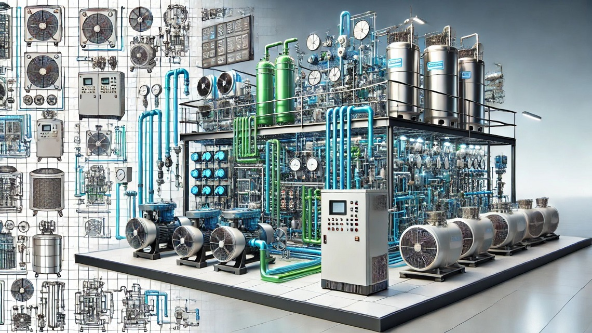

Спеціальність: 142 «Енергетичне машинобудування»
Освітньо-професійний ступінь: «фаховий молодший бакалавр»
Освітня програма: «Монтаж і обслуговування холодильно-компресорних машин та установок»
Освітня кваліфікація: фаховий молодший бакалавр з енергетичного машинобудування

Холодильні технології змінюють світ! Це не просто тренд – це фундамент сучасного життя. Системи охолодження забезпечують збереження продуктів, створюють комфорт у будинках і офісах, підтримують роботу лікарень, торгових центрів та навіть впливають на глобальну економіку. Вибравши спеціальність 142 Енергетичне машинобудування, ти отримаєш не тільки практичні навички роботи з передовими технологіями, а й станеш частиною глобальних змін, спрямованих на сталий розвиток.
Що робить цю професію актуальною сьогодні?
Тренд на енергоефективність та екологічність. Холодильні системи переходять на безпечні для природи холодоагенти, і спеціалісти, які знають ці технології, – на вагу золота.
Зростання урбанізації. Міста стають більшими, а разом із ними зростає потреба у потужних системах кондиціювання, охолодження та зберігання.
Розвиток "зеленої" економіки.. Інноваційні холодильні технології є невід'ємною частиною переходу до сталого майбутнього.
Навчання за нашою програмою відкриє для тебе перспективи:
Глобального ринку праці. Індустрія охолодження потребує спеціалістів у будь-якій країні світу.
Технологічного лідерства. Ти працюватимеш із сучасними інструментами, обладнанням та програмними комплексами.
Кар’єри у сфері інновацій. Енергоефективні системи – це не лише тренд, а необхідність, що забезпечує економію ресурсів та захист навколишнього середовища.
Будь частиною змін вже сьогодні!
Почни з нашої спеціальності й побудуй кар'єру у сфері, що справді змінює світ на краще. Зроби крок до своєї професійної мрії, обираючи спеціальність 142 Енергетичне машинобудування! .
Долучайтеся до нас – разом створимо сучасні рішення у сфері штучного холоду, що працює на сьогодення і майбутнє!